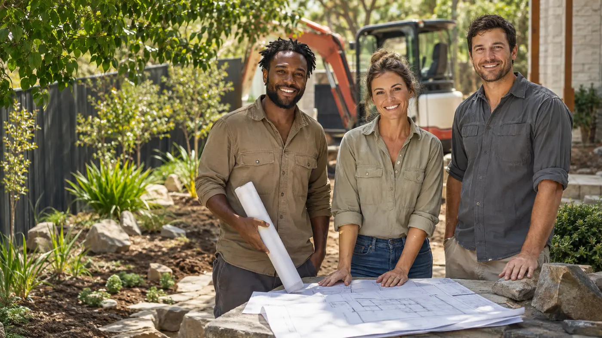

About Dawson Landscaping
Creative thinking.
Practical delivery.
A Perth-focused landscaping approach that connects design decisions, built details and ongoing garden needs around the property.
One connected approach
Landscape decisions
that belong together.
Dawson Landscaping & Maintenance brings design, construction and garden care into one practical conversation for Perth property owners.
The approach begins with the site: how people move through it, where levels and access create constraints, what the planting needs to achieve and how the finished landscape will be cared for. That wider view helps prevent isolated decisions and supports an outdoor result that feels complete.
From the first enquiry, the aim is to understand what should change, what is worth retaining and which service pathway will make the next decision more useful. Clear context early creates a stronger foundation for design, delivery and handover.
Perth focusLocal conditions, property types and outdoor living priorities
remain part of the conversation.
Whole-site viewHardscape, planting, water and future care are considered
together.
Clear handoverPractical communication connects the first enquiry with the
finished landscape.

Demo team photographyMeet the people behind the workReplace with an approved Dawson owner or team photograph
Meet Dawson
Built around
the property.
Demo company story preview
This polished preview shows where Dawson's approved story will explain how the business began, the experience behind the work and why design, construction and garden care are treated as one connected service. Final wording will be replaced with verified client-supplied details.
How Dawson works
Principles behind the work.
Every project begins with listening, understanding the site and establishing a clear path from the first conversation to handover.
Listen before solving
Understand priorities, frustrations, use, budget and timing before recommending a direction.
Design for the site
Respond to access, orientation, levels, existing assets and Perth conditions rather than forcing a template.
Connect the details
Consider how paths, lawn, planting, irrigation and materials affect one another.
Keep scope clear
Make inclusions, exclusions and the next decision easier to understand before delivery begins.
Respect the property
Discuss access, site impact and practical expectations around the work area.
Plan beyond handover
Consider establishment and future maintenance as part of the landscape, not an afterthought.

The company promise
Make the next step
useful and clear.
Not every enquiry needs the same response. Some properties need a design pathway, some a focused construction scope and others a maintenance conversation. Qualification is part of good service because it directs time toward the right solution.
- Initial project details reviewed
- Service-area and scope fit reviewed early
- Photos and project context welcomed
- Clear confirmation when your enquiry has been received
The client journey
Clear from enquiry to handover.
The detailed path changes with the project, but the principles remain consistent.
Enquiry
Share enough detail for Dawson to understand the property, priorities and likely service fit.
Scope
Clarify the site, decisions, inclusions and most useful next stage.
Delivery
Complete the agreed work with practical communication around progress and site needs.
Handover
Review the result and relevant care expectations for the landscape delivered.
Client experience
The experience
behind the outcome.
Approved feedback will connect the finished project with the communication, site care and handover experience behind it.
“The whole landscape now feels considered, practical and connected to the way we use the property.”
Working with Dawson
A fit for your project?
Dawson services selected areas across Perth metro. Include the property suburb with your enquiry so availability, project fit and scheduling can be confirmed accurately.
Yes. Projects can connect landscape design and construction, with garden-care services available where they suit the property. The most useful combination is confirmed after the site and priorities are reviewed.
Send the suburb, current photos, priorities, preferred timing and a realistic budget range. This helps Dawson assess service fit and recommend a productive next step.
Looking for a practical landscape partner?